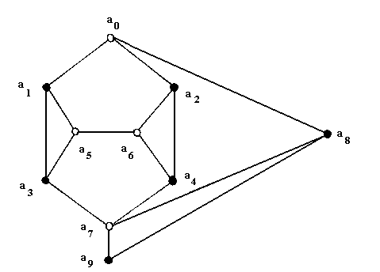
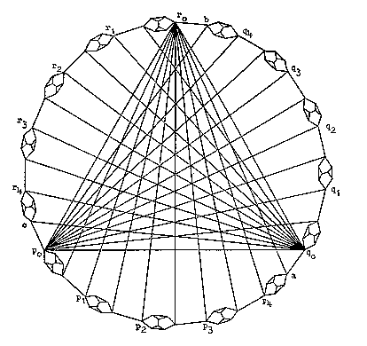
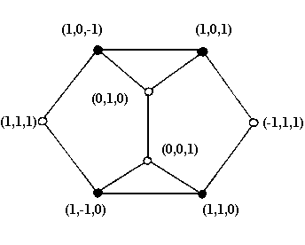

The Kochen-Specker Theorem
The Kochen-Specker theorem is an important and subtle topic in the foundations of quantum mechanics (QM). The theorem demonstrates the impossibility of a certain type of interpretation of QM in terms of hidden variables (HV) that naturally suggests itself when one begins to consider the project of interpretating QM.We here present the theorem/argument and the foundational discussion surrounding it at different levels. The reader looking for a quick overview should read the following sections and subsections: 1, 2, 3.1, 3.2, 4, and 6. Those who read the whole entry will find proofs of some non-trivial claims in supplementary documents.
- 1. Introduction
- 2. Background to the KS Theorem
- 3. Statement and Proof of the KS Theorem
- 4. The Functional Composition Principle
- 5. Escaping the KS Argument
- 6. The Question of Empirical Testing
- Bibliography
- Academic Tools
- Other Internet Resources
- Related Entries
1. Introduction
QM has the peculiar property that quantum-mechanical states imply, in general, only statistical restrictions on the results of measurements. The natural conclusion to be drawn is that these states are incomplete descriptions of quantum systems. QM, thus, would be incomplete in the sense that a typical QM state description of an individual system could be supplemented with a more complete description in terms of an HV theory. In an HV description of the system the QM probabilities would be naturally interpreted as epistemic probabilities of the sort that arise in ordinary statistical mechanics. Such an HV description might not be practically useful, but one is tempted to think that it should at least be possible in principle. There are, however, two powerful theorems to the effect that such a description is subject to severe constraints: QM, given certain at least prima facie plausible premises, cannot be supplemented by an HV theory. The more famous of these two theorems is Bell’s theorem which states that, given a premise of locality, an HV model cannot match the statistical predictions of QM. The second important no-go theorem against HV theories is the theorem of Kochen and Specker (KS) which states that, given a premise of noncontextuality (to be explained presently) certain sets of QM observables cannot consistently be assigned values at all (even before the question of their statistical distributions arises).
Before seeing the workings of the KS theorem in some detail, we must clarify why it is of importance to philosophers of science. The explicit premise of HV interpretations, as understood throughout below, is one of value definiteness:
(VD) All observables defined for a QM system have definite values at all times.
(Note that for Bohmian Mechanics often viewed as an HV interpretation of QM, this statement would have to be qualified.) [1] VD is motivated by an apparently innocuous assumption about experimental results, which is reflected in the custom of referring to quantum experiments as "measurements," namely, that these experiments reveal vales that exist independently of being measured. (Note that we do not need to assume here that the values are faithfully revealed by measurement, but only that they exist!) This suggest a second, seemingly innocuous assumption, that of noncontextuality:
(NC) If a QM system possesses a property (value of an observable), then it does so independently of any measurement context, i.e. independently of how that value is eventually measured.
When applied to specific properties that can be measured in different incompatible measurements, NC says that these properties are the same in these different measurement situations.
Now, suppose we adopt the usual association of properties of a quantum system, that is, yes-no observables, and projection operators on the system’s Hilbert space.
(O) There is a one-one correspondence between properties of a quantum system and projection operators on the system’s Hilbert space
The KS theorem establishes a contradiction between VD + NC + O and QM; thus, acceptance of QM logically forces us to renounce either VD or NC or O.
If a HV theory satisfying these conditions were feasible, we would have a natural explanation of the statistical character of QM, and an elegant way of resolving the infamous measurement problem haunting all interpreters of QM (see the entry on quantum mechanics and the section on the measurement problem in the entry on philosophical issues in quantum theory for details). What the KS theorem shows is that a HV theory of the most straightforward sort, satisfying these conditions, is not an option. The HV program is left with only options that violate one or more of these conditions; see entries on Bohmian mechanics and modal interpretations of quantum mechanics.
2. Background to the KS Theorem
In the following, we will presuppose some familiarity with elementary QM notions like ‘state’, ‘observable’, ‘value’ and their mathematical representatives ‘vector’, ‘(self-adjoint) operator’ and ‘eigenvalue’ [see the entry on quantum mechanics for details]. We will usually identify the observables and the operators on an appropriate Hilbert space which represent them; if there is a need to distinguish operators and observables, we write the operators underlined and in boldface. (Thus an operator A represents an observable A.)
The present section states some elements of the historical and systematic background of the KS theorem. Most importantly, an argument by von Neumann (1932), a theorem by Gleason (1957), and a critical discussion of both plus a later argument by Bell (1966) have to be considered. Von Neumann, in his famous 1932 book Die mathematischen Grundlagen der Quantenmechanik, disputed the possibility of providing QM with an HV underpinning. He gave an argument that boils down to the following: Consider the mathematical fact that, if A and B are self-adjoint operators, then any real linear combination of them (any C = αA + βB, where α, β are arbitrary real numbers) is also a self-adjoint operator. QM further dictates that:
- If A and B (represented by self-adjoint operators A and B) are observables on a system, then there is an observable C (represented by self-adjoint operator C defined as before) on the same system.
- If, for any QM state, the expectation values of A and B are given by <A> and <B>, then the expectation value of C is given by <C>=α<A> + β<B>.
Now consider A, B, C, as above, and assume they have definite values v(A), v(B), v(C). Consider a ‘hidden state’ V which determines v(A), v(B), v(C). We can then derive from V trivial ‘expectation values’ which are just the possessed values themselves: <A>V = v(A), and so on.[2] Of course, these ‘expectation values’ do not, in general, equal the QM ones: <A>V ≠ <A> (we would indeed think of the latter as averages over the former for different hidden states V!). However, von Neumann requires that the <A>V, like the <A>, conform to (2). This automatically entails that the values themselves must conform to a condition parallel to (2), i.e.:
- v(C) = αv(A) + βv(B).
This, however, is impossible, in general. An example very easily shows how (3) is violated, but because of its simplicity it also shows the argument’s inadequacy. (This example is not due to von Neumann himself, but to Bell![3]) Let A = σx and B = σy, then operator C = (σx + σy)/√2 corresponds to the observable of the spin component along the direction bisecting x and y. Now all spin components have (in suitable units) possible values ±1 only, thus, the HV proponent is forced to ascribe ±1 to A, B, C as values, and thus as ‘expectation values’. But (3) now obviously cannot be fulfilled, since ±1 ≠ (±1 + ±1)/√2.
The example illustrates why von Neumann’s argument is unsatisfying. Nobody disputes the move from (2) to (3) for compatible observables, i.e. those which, according to QM, are jointly measurable in one arrangement. The above choice of A, B, C, however, is such that any two of them are incompatible, i.e. are not jointly observable. For these we will not want to require any HV interpretation to meet (3), but only (2). The hidden values need not conform with (3) in general, only the averages of their values in a series of tests must conform with (2). The authority of von Neumann’s argument comes from the fact that requirements (1) and (2), for QM states, are consequences of the QM formalism, but this does not in itself justify extending these requirements to the hypothetical hidden states. Indeed, if (3) were unrestrictedly true, this would nicely explain, in the presence of hidden values, why (2) is. Von Neumann apparently thought that the HV proponent is committed to this explanation, but this seems an implausible restriction.
The KS theorem remedies this defect, and thus strengthens the case against HV theories insofar as it assumes (3) only for sets of observables {A, B, C} which are all mutually compatible. The theorem requires that only for compatible observables assumption (3) must hold.
A second, independent line of thought leading to the KS theorem is provided by Gleason’s theorem (Gleason 1957). The theorem states that on a Hilbert space of dimension greater than or equal to 3, the only possible probability measures are the measures μ(Pα) = Tr(Pα W), where Pα is a projection operator, W is the statistical operator characterizing the system’s actual state and Tr is the trace operation.[4] The Pα can be understood as representing yes-no observables, i.e. questions for whether a QM system ‘living’ in such a Hilbert space has a property α or not, and every possible property α is associated uniquely with a vector |α> in the space — so, the task is to unambiguously assign probabilities to all vectors in the space. Now, the QM measure μ is continuous, so Gleason’s theorem in effect proves that every probability assignment to all the possible properties in a three-dimensional Hilbert space must be continuous, i.e. must map all vectors in the space continuously into the interval [0, 1]. On the other hand, an HV theory (if characterized by VD + NC) would imply that of every property we can say whether the system has it or not. This yields a trivial probability function which maps all the Pα to either 1 or 0, and, provided that values 1 and 0 both occur (which follows trivially from interpreting the numbers as probabilities), this function must clearly be discontinuous (cf. Redhead 1987: 28).
The proof of Gleason’s theorem is notoriously intricate. It is notable, however, that this corollary of Gleason’s theorem can be obtained more directly via means much more elementary than those employed in Gleason’s proof. Bell (1982: 994, 1987: 164) credits J. M. Jauch with drawing his attention (in 1963) to Gleason’s theorem, and with pointing out that it implies the strengthening of von Neumann’s result, with the additivity requirement only for commuting observables. Bell then went on to prove the result in an elementary way, without use of Gleason’s proof (Bell 1966). Unknown to Bell, Specker had already arrived at this result, alluded to (but not presented) in Specker (1960), as ein elementargeometrisches Argument.[5] The argument was presented in Kochen and Specker (1967). Bell’s proof and the Kochen-Specker proof utilize similar constructions in 3-dimensional Hilbert space, though they differ in their details. Kochen and Specker go on to explicitly construct a finite set of projections that cannot be assigned values subject to the constraint that the additivity requirement (3) hold when A and B commute. Though Bell does not do so, one can readily obtain from Bell’s construction also a finite set of observables that cannot be assigned values subject to the additivity constraint for commuting observables (see Mermin 1993).
After having offered his variant of the argument against HV theories from Gleason’s theorem, Bell proceeds to criticise it. His strategy parallels the one against von Neumann. Bell points out that his own Gleason-type argument against arbitrary closeness of two opposite-valued points presupposes non-trivial relations between values of non-commuting observables, which are only justified given an assumption of noncontextuality (NC). He proposes as an analysis of what went wrong that his own argument “tacitly assumed that measurement of an observable must yield the same value independently of what other measurements may be made simultaneously” (1966: 9). In opposition to von Neumann, the Gleason-type argument derives restrictions on value assignments like (3) only for sets of compatible observables; but still one and the same observable can be a member of different commuting sets, and it is essential to the arguments that the observable gets assigned the same value in both sets, i.e. that the value assignment is not sensitive to a context.
3. Statement and Proof of the KS Theorem
3.1 Statement of the KS Theorem
An explicit statement of the KS theorem runs thus:
Let H be a Hilbert space of QM state vectors of dimension x ≥ 3. There is a set M of observables on H, containing y elements, such that the following two assumptions are contradictory:(KS1) All y members of M simultaneously have values, i.e. are unambiguously mapped onto real numbers (designated, for observables A, B, C, …, by v(A), v(B), v(C), …).
(KS2) Values of all observables in M conform to the following constraints:
(a) If A, B, C are all compatible and C = A+B, then v(C) = v(A)+v(B);(b) if A, B, C are all compatible and C = A·B, then v(C) = v(A)·v(B).
Assumption KS1 of the theorem obviously is an equivalent of VD. Assumptions KS2 (a) and (b) are called the Sum Rule and the Product Rule, respectively, in the literature. (The reader should again note that, in opposition to von Neumann’s implicit premise, these rules non-trivially relate the values of compatible observables only.) Both are consequences of a deeper principle called the functional composition principle (FUNC), which in turn is a consequence of (among other assumptions) NC. The connection between NC, FUNC, Sum Rule and Product Rule will be made explicit in Section 4.
The KS Theorem claims the existence of a set M with a certain property (i.e. being such that KS1 and KS2 are contradictory)[6] and the proof proceeds by explicitly presenting such a set, for different choices of x and y. In the original KS proof x=3 and y=117. More recently proofs involving less observables have been given by (among many others) Peres (1991, 1995) for x=3 and y=33, by Kernaghan (1994) for x=4 and y=20 and by Cabello et al. (1996) for x=4 and y=18. The KS proof is notoriously complex, and we will only sketch it in Section 3.4. The Peres proof establishes the KS result in full strength, with great simplicity, and, moreover, in an intuitively accessible way, since it operates in three dimensions; we refer the reader to Peres (1995: 197–99). The proofs by Kernaghan and Cabello et al. each establish a contradiction in four dimensions. These are weaker results, of course, than the KS theorem (since every contradiction in 3 dimensions is also a contradiction in higher dimensions, but not conversely). However, these other proofs are very simple and instructive. Moreover, it can be shown (Pavičić et al. 2005) that y=18 is the lowest number for which the KS theorem holds true, so we start by presenting the proof of Cabello and his co-workers in Section 3.2. Finally, in Section 3.5, we explain an argument by Clifton (1993) where x=3 and y=8 and an additional statistical assumption yields an easy and instructive KS argument.
3.2 A Quick KS Argument in Four Dimensions (Cabello et al.)
A particularly easy KS argument proceeds in a four-dimensional Hilbert space H4. We will use the following, which will be proved in the next section:
(1) From KS2 we can derive a constraint on value assignments to projection operators, namely that for every set of projection operators P1, P2, P3, P4, corresponding to the four distinct eigenvalues q1, q2, q3, q4 of an observable Q on H4 the following holds:
(VC1′) v(P1) + v(P2) + v(P3) + v(P4) = 1, where v(Pi) = 1 or 0, for i = 1, 2, 3, 4.
((VC1′) is a variant of (VC1) which we prove explicitly in the next section.) This means in effect that of every set of four orthogonal rays in H4 exactly one is assigned the number 1, the others 0.
(2) Although the Hilbert space mentioned in the theorem, in order to be suited for QM, must be complex, it is enough, in order to show the inconsistency of claims KS1 and KS2, to consider a real Hilbert space of the same dimension. So, instead of H4 we consider a real Hilbert space R4 and translate VC1′ into the requirement: Of every set of orthogonal rays in R4, exactly one is assigned the number 1 and the others 0. As usual in the literature, we translate all this into the following colouring problem: Of every set of orthogonal rays in R4 exactly one must be coloured white, the others black. This, however, is impossible, as is shown immediately by the following table (Cabello et al. 1996):
| 0,0, 0,1 |
0,0, 0,1 |
1,−1, 1,−1 |
1,−1, 1,−1 |
0,0, 1,0 |
1,−1, −1,1 |
1,1, −1,1 |
1,1, −1,1 |
1,1, 1,−1 |
| 0,0, 1,0 |
0,1, 0,0 |
1,−1, −1,1 |
1,1, 1,1, |
0,1, 0,0 |
1,1, 1,1 |
1,1, 1,−1 |
−1,1, 1,1 |
−1,1, 1,1 |
| 1,1, 0,0 |
1,0, 1,0 |
1,1, 0,0 |
1,0, −1,0 |
1,0, 0,1 |
1,0, 0,−1 |
1,−1, 0,0 |
1,0, 1,0 |
1,0, 0,1 |
| 1,−1, 0,0 |
1,0, −1,0 |
0,0, 1,1 |
0,1, 0,−1 |
1,0, 0,−1 |
0,1, −1,0 |
0,0, 1,1 |
0,1, 0,−1 |
0,1, −1,0 |
There are 4 x 9 = 36 entries in this table. These entries are taken from a set of 18 rays and every ray appears twice. It is easy to verify that every column in the table represents a set of four orthogonal rays. Since there are 9 columns, we must end up with an odd number of the table’s entries coloured white. However, since every ray appears twice any time we colour one of them white, we commit ourselves to colouring an even number of the entries white. It follows that the total number of table entries coloured white must be even, not odd. Thus, a colouring of these 18 rays in accordance with VC1′ is impossible. (Note for future reference that the first part of the argument — the argument for ‘odd’ — uses only VC1′, while the second — the argument for ‘even’ — relies essentially on NC, by assuming that occurrences of the same ray in different columns are assigned the same number!)
3.3 The Original KS Argument. Technical Preliminaries.
The original KS proof operates on a three-dimensional complex Hilbert space H3. It requires two things: (1) sets of triples of rays which are orthogonal in H3; (2) a constraint to the effect that of every orthogonal triple one ray gets assigned the number 1, the two others 0. Both can be achieved as follows:
We consider an arbitrary operator Q on H3 with three distinct eigenvalues q1, q2, q3, its eigenvectors |q1>, |q2>, |q3>, and projection operators P1, P2, P3 projecting on the rays spanned by these vectors. Now, P1, P2, P3 are themselves observables (namely, Pi is a ‘yes-no observable’ corresponding to the question ‘Does the system have value qi for Q?’). Moreover, P1, P2, P3 are mutually compatible, so we can apply the Sum Rule and Product Rule, and thereby derive a constraint on the assignment of values (Proof):
(VC1) v(P1) + v(P2) + v(P3) = 1, where v(Pi) = 1 or 0,
for i = 1, 2, 3.
The arbitrary choice of an observable Q defines new observables P1, P2, P3 which, in turn, select rays in H3. So, to impose that observables P1, P2, P3 all have values means to assign numbers to rays in H3, and VC1, in particular, means that of an arbitrary triple of orthogonal rays, specified by choice of an arbitrary Q (briefly: an orthogonal triple in H3), exactly one of its rays is assigned 1, the others 0. Now, if we introduce different incompatible observables Q, Q′, Q″, … these observables select different orthogonal triples in H3. Assumption (1) of the KS theorem (which, effectively, is VD) now tells us that every one of these triples has three values, and VC1 tells us that these values must be for every triple, exactly {1, 0, 0}. What KS now shows is that, for a specific finite set of orthogonal triples in H3, an assignment of numbers {1, 0, 0} to every one of them (matching in common rays) is impossible. Further reflection yields that while H3 is complex, it is in fact enough to consider a real three-dimensional Hilbert space R3. For we can show that if an assignment of values according to VC1 is possible on H3, then it is possible on R3. Contrapositively, if the assignment is impossible on R3, then it is impossible on H3. So we can fulfill the conditions necessary to get the KS proof started and at the same time reduce the problem to one on R3. Now, the equivalent in R3 of an arbitrary orthogonal triple in H3, is, again, an arbitrary triple of orthogonal rays (briefly: an orthogonal triple in R3). So, if KS want to show that, for a specific set of n orthogonal triples in H3 (where n is a natural number), an assignment of numbers {1, 0, 0} to every one of them is impossible, it is enough for them to show that, for a specific set of n orthogonal triples in R3, an assignment of numbers {1, 0, 0} to every one of them is impossible. And this is exactly what they do.
It should be stressed that at this point there is no direct connection between R3 and physical space. KS wish to show that for an arbitrary QM system requiring a representation in a Hilbert space of at least three dimensions, the ascription of values in conjunction with condition (KS2) (Sum Rule and Product Rule) is impossible, and in order to do this it is sufficient to consider the space R3. This space R3, however, does not represent physical space for the quantum system at issue. In particular, orthogonality in R3 is not to be confused with orthogonality in physical space. This becomes obvious if we move to an example of a QM system sitting in physical space and at the same time requiring a QM representation in H3, e.g. the spin degree of freedom of a one-particle spin-1 system. Given an arbitrary direction α in physical space and an operator Sα representing the observable of a spin component in direction α, H3 is spanned by the eigenvectors of Sα, namely |Sα=1>, |Sα=0>, |Sα=−1>, which are mutually orthogonal in H3. The fact that these three vectors corresponding to three possible results of measurement in one spatial direction are mutually orthogonal illustrates the different senses of orthogonality in H3 and in physical space. (The reason lies, of course, in the structure of QM, which represents different values of an observable by different directions in H3.)
KS themselves, in the abstract, proceed in exactly the same way, but they illustrate with an example that does establish a direct connection with physical space. It is important to see this connection, but also to be clear that it is produced by KS’s example and is not inherent in their mathematical result. KS propose to consider a one-particle spin-1 system and the measurement of the squared components of orthogonal directions of spin in physical space Sx2, Sy2, Sz2, which are compatible (while Sx, Sy, Sz themselves are not).[7] Measurement of a squared component of spin determines only its absolute value. Here, they derive a slightly different constraint on value assignments, again using the Sum Rule and the Product Rule (Proof):
(VC2) v(Sx2) + v(Sy2) + v(Sz2) = 2, where v(Sα2) = 1 or 0,
for α = x, y, z.
Now, since Sx2, Sy2, Sz2 are compatible, there is an observable O such that Sx2, Sy2, Sz2 are all functions of O. So, the choice of an arbitrary such O fixes Sx2, Sy2, Sz2 and, since the latter can be directly associated with mutually orthogonal rays in H3, again fixes the choice of an orthogonal triple in H3. The resulting problem here is to assign numbers {1, 1, 0} to an orthogonal triple in H3 specified by the choice of O or, more directly, of Sx2, Sy2, Sz2. This is, of course, the mirror-image of our previous problem of assigning numbers {1, 0, 0} to such a triple, and we need not consider it separately.
However, the choice of a specific O that selects observables Sx2, Sy2, Sz2 at the same time selects three orthogonal rays in physical space, namely by fixing a coordinate system ±x, ±y, ±z (which defines along which orthogonal rays the squared spin components are to be measured) in physical space. So now, by choice of an observable O, there is a direct connection of directions in space with directions in H3: orthogonality in H3 now does correspond to orthogonality in physical space. The same holds for R3, if, in order to give an argument for H3, we consider R3. Orthogonality in R3 now corresponds to orthogonality in physical space. It is important to notice that this correspondence is not necessary to give the argument, even if we insist that the pure mathematical facts should be supplemented by a physical interpretation — since we have, just before, seen an example without any correspondence. The point is only that we can devise an example such that there is a correspondence. In particular, we can now follow the proof in R3 and all along imagine a system sitting in physical space, namely a spin-1 particle, returning three values upon measurement of three physical magnitudes, associated directly with orthogonal directions in physical space, namely v(Sx2), v(Sy2), v(Sz2), for arbitrary choices of x, y, z. The KS proof then shows that it is impossible (given its premises, of course) to assign to the spin-1 particle values for all these arbitrary choices. That is, the KS argument shows that (given the premises) a spin 1 particle cannot possess all the properties at once which it displays in different measurement arrangements.
Three further features which have become customary in KS arguments need to be mentioned:
(1) Obviously, we can unambiguously specify any ray in R3 through the origin by just giving one point contained in it. KS thus identify rays with points on the unit sphere E. KS do not need to refer to concrete coordinates of a certain point, since their argument is ‘coordinate-free’. We will, however, for illustration sometimes mention concrete points and then (a) use Cartesian coordinates to check orthogonality relations and (b) specify rays by points not lying on E. (Thus, e.g., the triple of points (0, 0, 1), (4, 1, 0), (1, –4, 0) is used to specify a triple of orthogonal rays.) Both usages conform with the recent literature (see e.g. Peres (1991) and Clifton (1993)).
(2) We translate the constraints (VC1) and (VC2) on value ascriptions into constraints for colouring the points. We can, operating under (VC1) colour the points white (for “1”) and black (for “0”), or, operating under (VC2) colour the points white (for “0”) and black (for “1”). In either case the constraints translate into the same colouring problem.
(3) KS illustrate orthogonality relations of rays by graphs which have come to be called KS diagrams. In such a diagram each ray (or point specifying a ray) is represented by a vertex. Vertices joined by a straight line represent orthogonal rays. The colouring problem then translates into the problem of colouring the vertices of the diagram white or black such that joined vertices cannot be both white and triangles have exactly one white vertex.
3.4 The Original KS Argument. Sketch of the Proof.
KS proceed in two steps.
(1) In the first (and decisive) step they show that two rays with opposite colours cannot be arbitrarily close. They first show that the diagram Γ1 depicted in Fig. 1 (where for the time being we ignore the colours specified in the figure) can be constructed, only if a0 and a9 are separated by an angle θ with 0 ≤ θ ≤ sin−1(1/3) (Proof).

Figure 1: Ten-point KS graph Γ1 with inconsistent colouring.
Consider now (for a reductio ad absurdum) that a0 and a9 have different colours. We arbitrarily colour a0 white and a9 black. The colouring constraints then force us to colour the rest of the diagram as is done in Fig. 1, but this requires that a5 and a6 are orthogonal and both white — which is forbidden. Hence, two points closer than sin−1(1/3) cannot have different colours. Contrapositively, two points of different colour cannot be closer than sin−1(1/3).
(2) KS now construct another quite complicated KS diagram Γ2 in the following way. They consider a realization of Γ1 for an angle θ=18° < sin−1(1/3). Now they choose three orthogonal points p0, q0, r0 and space interlocking copies of Γ1 between them such that every instance of point a9 of one copy of Γ1 is identified with the instance of a0 of the next copy. In this way five interlocking copies of Γ1 are spaced between p0 and q0 and all five instances of a8 are identified with r0 (likewise five such interlocking copies are spaced between q0 and r0, identifying all copies of a8 with p0, and between p0 and r0, identifying all copies of a8 with q0). That Γ2 is constructible is borne out directly by the construction itself. Spacing out five copies of Γ1 with angles θ=18° between instances of a0 will space out an angle of 5x18° = 90° which is exactly what is required. Moreover, wandering from one copy of Γ1 to the next between, say, p0 and q0 is equivalent to a rotation by 18° of the copy about the axis through the origin and r0, which evidently conserves the orthogonality between the points a0 and a9 of the copy and r0.

Figure 2: 117-point KS graph Γ2
(From Kochen and Specker 1967, 69; by permission of the Indiana University Mathematics Journal)
However, although Γ2 is constructible it is not consistently colourable. From the first step we know that a copy of Γ1 with θ=18° requires that points a0 and a9 have equal colour. Now, since a9 in one copy of Γ1 is identical to a0 in the next copy, a9 in the second copy must have the same colour as a0 in the first. Indeed, by repetition of this argument all instances of a0 must have the same colour. Now, p0, q0, r0 are identified with points a0, so they must be either all white or all black — both of which are inconsistent with the colouring constraint that exactly one of them be white.
If from the 15 copies of Γ1 used in the process of constructing Γ2 we subtract those points that were identified with each other, we end up with 117 different points. So, what KS have shown is that a set of 117 yes-no observables cannot consistently be assigned values in accordance with VC1 (or, equivalently, VC2).
Note that in the construction of Γ1, i.e. the set of 10 points forming 22 interlocking triples, all points except a9 appear in more than one triple. In Γ2 every point appears in a multiplicity of triples. It is here that the noncontextuality premise is crucial to the argument: we assume that an arbitrary point keeps its value 1 or 0 as we move from one orthogonal triple to the next (i.e. from one maximal set of compatible observables to another).
3.5 A Statistical KS Argument in Three Dimensions (Clifton)
Recall KS’s first step, which establishes that two points with opposite colour cannot be arbitrarily close. It is this first step which carries the whole force of the argument. Bell had established it in a different way and had then argued that in a noncontextual HV interpretation points with opposite colour must be arbitrarily close. It is this first step that Clifton exploits in an argument that combines Bell’s and KS’s ideas.

Figure 3: 8-point KS-Clifton graph Γ3 with inconsistent colouring.
Consider the KS diagram Γ3 shown in Figure 3 which obviously is a part of KS’s Γ1, but which has additional concrete assignments of eight points satisfying the orthogonality relations (and thus proving directly that Γ3 is constructible). From our previous colouring constraints (joined points are not both white and a triangle has exactly one white point) we see immediately that Γ3 is colourable only if the outermost points are not both white (which would require, as shown in Fig. 3, that two joined points are white — contrary to the constraints). Moreover, we easily calculate the angle between the two outermost points to be cos−1(1/3).[8] So we conclude that if one wants to colour all eight points and wants to colour white one of the outer ones, then the other must be black. Taking into account that we can insert a diagram between any two points in R3 which are separated by exactly the angle cos−1(1/3) and translating our problem back from a colouring problem into KS’s example (constraint VC2), we end with a constraint VC2′:
(VC2′) If, for a spin-1 system, a certain direction x of spin in space is assigned value 0, then any other direction x′ which lies away from x by an angle cos−1(1/3) must be assigned value 1, or, in symbols: If v(Sx)=0, then v(Sx′)=1.
The argument so far has made use of the original KS conditions KS1 and KS2. We now assume, in addition, that any constraint on value assignments will show up in the measurement statistics. In particular:
(3) If prob[v(A)=a] = 1, and v(A)=a implies v(B)=b, then prob[v(B)=b] = 1.
Despite the use of statistics, this reasoning crucially differs from von Neumann’s argument. Von Neumann had argued that algebraic relations between values should transfer into the statistics of the measured values, therefore the QM constraints on these statistics should have value constraints as their exact mirror images — which reasoning leads us to derive value constraints from statistical constraints (for arbitrary observables). Here, on the contrary, we derive a value constraint independently from any statistical reasoning, and then conclude that this constraint should transfer into the measurement statistics.[9]
Now, VC2′ and the statistical condition (3) entail: If prob[v(Sx)=0]=1, then prob[v(Sx′)=1]=1. This, however, contradicts the statistics derived from QM for a state where prob[v(Sx)=0] = 1.[10] In fact, there is a probability of 1/17 that v(Sx′=0). So, in a long-run test 1/17 of the spin-1 particles will violate the constraint.
If we accept Clifton’s statistical reasoning, we have an entirely valid KS argument establishing a contradiction between an HV interpretation of QM and the very predictions of QM. Clifton presents also a slightly more complex set of 13 observables yielding, along the same lines, a statistical contradiction of 1/3.
Clifton’s argument uses 8 (or 13) observables, fixes a value of one of them (Sx) and derives a HV prediction at variance with a QM prediction for a second one (Sx′). Hence, if a state can be produced where the QM system definitely has value v(Sx)=0 the predictions can be tested empirically. But fixing such a state experimentally is not an easy matter. So Clifton’s argument depends on a state that may be difficult to produce or isolate. Recently, a construction of 13 observables has been found that allows for a state-independent statistical argument (Yu and Oh 2012).
4. The Functional Composition Principle
The key ingredients of the KS theorem are the constraints on value assignments spelled out in (2): the Sum Rule and Product Rule. They can be derived from a more general principle, called the Functional Composition Principle (FUNC).[11] The principle trades on the mathematical fact that for a self-adjoint operator A operating on a Hilbert space, and an arbitrary function f: R→R (where R is the set of the real numbers), we can define f(A) and show that it also is a self-adjoint operator (hence, we write f(A)). If we further assume that to every self-adjoint operator there corresponds a QM observable, then the principle can be formulated thus:
FUNC: Let A be a self-adjoint operator associated with observable A, let f: R → R be an arbitrary function, such that f(A) is another self-adjoint operator, and let |φ> be an arbitrary state; then f(A) is associated uniquely with an observable f(A) such that:v(f(A))|φ> = f(v(A))|φ>
(We introduce the state superscript above to allow for a possible dependence of values on the particular quantum state the system is prepared in.) The Sum Rule and the Product Rule are straightforward consequences of FUNC [Proof]. FUNC itself is not derivable from the formalism of QM, but a statistical version of it (called STAT FUNC) is [Proof]:
STAT FUNC: Given A, f, |φ> as defined in FUNC, then, for an arbitrary real number b:prob[v(f(A))|φ>=b] = prob[f(v(A))|φ>=b]
But STAT FUNC cannot only be derived from the QM formalism; it also follows from FUNC [Proof]. This can be seen as providing “a plausibility argument for FUNC” (Redhead 1987: 132): STAT FUNC is true, as a matter of the mathematics of QM. Now, if FUNC were true, we could derive STAT FUNC, and thus understand part of the mathematics of QM as a consequence of FUNC.[12]
But how can we derive FUNC itself, if not from STAT FUNC? It is a direct consequence of STAT FUNC and three assumptions (two of which are familiar from the introduction):
Value Realism (VR): If there is an operationally defined real number α, associated with a self-adjoint operator A and if, for a given state, the statistical algorithm of QM for A yields a real number β with β = prob(v(A)=α), then there exists an observable A with value α.Value Definiteness (VD): All observables defined for a QM system have definite values at all times.
Noncontextuality (NC): If a QM system possesses a property (value of an observable), then it does so independently of any measurement context.
VR and NC require further explanation. First, we need to explain the content of VR. The statistical algorithm of QM tells us how to calculate a probability from a given state, a given observable and its possible value. Here we understand it as a mere mathematical device without any physical interpretation: Given a Hilbert space vector, an operator and its eigenvalues, the algorithm tells us how to calculate new numbers (which have the properties of probabilities). In addition, by ‘operationally defined’ we here simply mean ‘made up from a number which we know to denote a real property’. So, VR, in effect, says that, if we have a real property Γ (value Γ of an observable G), and we are able to construct from Γ a new number α and find an operator A such that α is an eigenvalue of A, then (we have fulfilled everything necessary to apply the statistical algorithm; thus) A represents an observable A and its value α is a real property.
Second, a failure of NC could be understood in two ways. Either the value of an observable might be context-dependent, although the observable itself is not; or the value of an observable might be context-dependent, because the observable itself is. In either case, the independence from context of an observable implies that there is a correspondence of observables and operators. This implication of NC is what we will use presently in the derivation of FUNC. We will indeed assume that, if NC holds, this means that the observable — and thereby also its value — is independent of the measurement context, i.e. is independent of how it is measured. In particular, the independence from context of an observable implies that there is a 1:1 correspondence of observables and operators. This implication of NC is what we will use presently in the derivation of FUNC. Conversely, failure of NC will be construed solely as failure of the 1:1 correspondence.
From VR, VD, NC and STAT FUNC, we can derive FUNC as follows. Consider an arbitrary state of a system and an arbitrary observable Q. By VD, Q possesses a value v(Q)=a. Thus, we can form the number f(v(Q))=b for an arbitrary function f. For this number, by STAT FUNC, prob[f(v(Q))=b] = prob[v(f(Q))=b]. Hence, we have, by transforming probabilities according to STAT FUNC, created a new self-adjoint operator f(Q), and associated it with the two real numbers b and prob[f(v(Q))=b]. Thus, by VR, there is an observable corresponding to f(Q) with value b, hence f(v(Q))=v(f(Q)). By NC, that observable is unique, hence FUNC follows.
5. Escaping the KS Argument
The previous section clarifies which possibilities the HV theorist has to escape the KS argument: denying one of the three premises which together entail FUNC (hence the Sum Rule and Product Rule).
5.1 No General Value Definiteness
VD, we recall, was the fundamental presupposition of a fully-fledged HV interpretation. So, if, in order to escape a powerful argument against the possibility of HV interpretations, these interpretations drop their fundamental premise, this seems not to make much sense. But some interpreters point out that, between holding that only those observables which QM prescribes to have values[13] and holding that all of them have values, there is some leeway, namely, to propose that a set of observables, different from the one prescribed in QM (but neither, in general, more than these, nor, of course, all) have values. This option is called ‘partial value definiteness.’ One way to do this is to choose, once and for, a set of observables that can be assigned definite values without running afoul of the KS Theorem. The best-known example of this is the de Broglie-Bohm pilot wave theory, on which position and functions of position always have definite values. Another approach is to let the set of definite observables vary with the state; this is the approach taken by various modal interpretations. A variant on this approach is that of Bub (1997), on which some observable R is chosen to to be always-definite; the set of definite observables is then expanded to the maximal set that avoids a KS obstruction.
The rocks and shoals of modal interpretations are beyond the scope of this article (see the entry on modal interpretations). We just note that it is by no means clear how these interpretations can manage to always pick out the right set of observables assumed to have values. ‘Right set’ here minimally means that observables we perceive as having values (i.e. those corresponding to the measurement apparatus’s pointer position) must always be included and must always reproduce the QM statistics. We also mention two important results which cast doubt on the feasibility of modal interpretations: First, it can be shown that either partial value definiteness collapses into total value definiteness (i.e., VD) or classical reasoning about physical properties must be abandoned (Clifton 1995). Second, it is possible to derive KS theorems even in certain modal interpretations (Bacciagaluppi 1995, Clifton 1996).
Recently it has been argued that the denial of VD is inconsistent with QM itself (Held 2008, 2012a, 2012b). The argument tries to show that VD is a consequence of the theory itself (QM → VD). If this is indeed the case we have — recalling that KS establish that QM & VD & NC implies a contradiction — an argument for the claim that QM alone implies contextuality. Since, in that case, QM also implies VD we get, all in all, an argument for the claim that QM must be interpreted in terms of contextual hidden variables.
5.2 Denial of Value Realism
The derivation of FUNC essentially consists in the construction of an observable (i.e. f(Q)) via an operator (i.e., f(Q)) from the probability distribution of a variable (i.e. f(v(Q)) which number in turn is constructed from another variable, (i.e. v(Q)). Now, instead of denying that v(Q) exists in all cases (as the first option (5.1) would have it), we can reject that the existence of a number α and the construction of f(Q) automatically lead to an observable, i.e. we reject VR. This amounts to rejecting that for every self-adjoint operator, there is a well-defined observable.
Now, in order to formulate VR we had to give a reduced reading to the statistical algorithm, i.e. that it is a mere mathematical device for calculating numbers from vectors, operators and numbers. This reading is very artificial and presupposes that a minimal interpretive apparatus required to make physical sense of some operators (like Q) can be withheld for others (like f(Q)).
Moreover, it seems entirely implausible to assume that some operators — sums and products of operators that are associated with well-defined observables — are themselves not associated with well-defined observables, even if they mathematically inherit exact values from their summands or factors. Put in a crude example, this would amount to saying that to ask for a system’s energy is a well-defined question, while to ask for the square of the system’s energy is not, even if, from our answer to the first question and trivial mathematics, we have a well-defined answer at hand. There seems no good a priori reason to justify this restriction. So, to make rejecting VR plausible at all, an additional proposal is made: It is crucial to the KS argument that one and the same operator is constructed from different maximal ones which are incompatible: f(Q) is identical to g(P), where PQ − QP ≠ 0. We now assume that only the construction of f(Q) via Q, but not the one via P, leads to a well-defined observable in a certain context.[14]
This move however, automatically makes some observables context-sensitive. So, this way of motivating the denial of VR amounts to a kind of contextualism, which we might come by cheaper, by directly rejecting NC, and without any tampering with the statistical algorithm. (This fact explains why we did not mention denial of VR as a separate option in the introduction.).
5.3 Contextuality
Finally, we might accept VD and VR, but deny that our construction of an observable f(Q) is unambiguous. Thus, though f(Q) and g(P) are mathematically identical, we could assume that they correspond to different observables, arguing that an actual determination of v(f(Q)) must proceed via measuring Q, but the determination of v(g(P)) involves measuring P which is incompatible with Q. Since v(f(Q)) and v(g(P)) are thus outcomes of different measurement situations, there is no reason to assume that v(f(Q)) = v(g(P)). This way to block the KS proof comes to understanding f(Q) and g(P) as different observables (because of sensitivity to context), thus it amounts to rejecting NC. There are mainly two ways, in the literature, to further motivate this step. Accordingly, there are two important brands of contextuality to be discussed — causal and ontological contextuality.
The KS argument has been presented for possessed values of a QM system — independently of considerations about measurement. Indeed, in the argument measurement was mentioned only once and in the negative — in NC. However, since now we consider the rejection of NC, we must also take into account measurement and its complications. For that purpose it is good to explicate yet another principle that manifests our innocuous realism (see the introduction above), i.e. a principle of faithful measurement:
Faithful Measurement (FM): QM measurement of an observable faithfully delivers the value which that observable had immediately prior to the measurement interaction.
FM is also an extremely plausible presupposition of natural science, in general. (Note that FM entails VD, hence we could have given a KS argument for possible measurement results, using FM). Consider now the motivation, for the HV proponent, to reject NC. Obviously, the aim is to save other presuppositions, especially VD. Now, VD and NC are independent realist convictions, but NC and FM are not quite so independent. Indeed, we will see that rejection of NC entails the rejection of FM in one version of contextuality, and strongly suggests it in the other. (This makes more precise the somewhat cryptic remark from the introduction that it is not obvious what an interpretation endorsing the realist principle VD, but rejecting the realist principle NC, should look like. Such an interpretation would have to violate a third realist principle, i.e. FM.)
Causal Contextuality
A property (value of an observable) might be causally context-dependent in the sense that it is causally sensitive to how it is measured. The basic idea is that the observed value comes about as the effect of the system-apparatus interaction. Hence, measuring a system via interaction with a P-measuring apparatus might yield a value v(g(P)), measuring the same system via interaction with a Q-measuring apparatus a different value v(f(Q)), although both observables are represented by the same operator f(Q) = g(P). The difference in values is explained in terms of a context-dependence of the observables: The latter are context-dependent, since the different ways to physically realize them causally influence the system in different ways and thereby change the observed values.
If an interpreter wanted to defend causal contextuality, this would entail abandoning FM, at least for observables of the type f(Q) (non-maximal observables): Since their values causally depend on the presence of certain measurement arrangements, these arrangements are causally necessary for the values to come about, thus the values cannot be present before the system-apparatus interaction, and FM is violated. As an advantage of causal contextualism the following might be pointed out. It does not imply that the ontological status of the physical properties involved must change, i.e. does not imply that they become relational. If the property in an object is brought about via interaction with another one, it can still be one which the object has for itself after the interaction. However, the idea of causal contextuality is sometimes discussed critically, since there is reason to think that it may be empirically inadequate (see Shimony 1984, Stairs 1992).
Ontological Contextuality
A property (value of an observable) might be ontologically context-dependent in the sense that in order for it to be well-defined the specification of the observable it ‘comes from’ is necessary. Thus, in order to construct a well-defined observable from operator f(Q) = g(P), we need to know whether it is physically realized via observable P or observable Q. This way out of the KS problem, was first noted (but not advocated) by van Fraassen (1973). There are, then, as many observables and kinds of physical properties for an operator f(Q) as there are ways to construct f(Q) from maximal operators. Without further explanation, however, this idea just amounts to an ad hoc proliferation of physical magnitudes. A defender of ontological contextuality certainly owes us a more explicit story about the dependence of observable f(Q) on observable Q. Two possibilities come to mind:
(a) We might think that v(f(Q)) just is not a self-sustained physical property, but one which ontologically depends on the presence of another property v(Q). (Recall that in the proof of FUNC v(f(Q)) is constructed from v(Q).) But, since the position does not reject questions about values of f(Q) in a P-measurement situation as illegitimate (because it does not trade on a notion of an observable being well-defined in one context only!), this seems to lead to new and pressing questions, to say the least. As an attempt to defend a contextualist hidden variables interpretation, this position must concede that not only does the system have, in the Q-measurement situation, a value v(Q), but also, in a P-measurement situation, it has a value v′(Q), although perhaps v′(Q) ≠ v(Q). Now, questions for values of f(Q) in this situation at least are legitimate. Does v′(Q) imply another v′(f(Q)) ≠ v(f(Q))? Or does v′(Q), in opposition to v(Q), not lead to a value of f(Q), at all? Neither option seems plausible, for could we not, just by switching for a certain prepared system between a P- and Q-measurement situation either switch v(f(Q)) in and out of existence or switch between v(f(Q)) and v′(f(Q))? (b) We might think that, in order for f(Q) to be well-defined, one measurement arrangement rather than the other is necessary. The idea is strongly reminiscent of Bohr’s 1935 argument against EPR, and indeed may be viewed as the appropriate extension of Bohr’s views on QM to the modern HV discussion (see Held 1998, ch.7). In this version of ontological contextualism the property v(f(Q)), rather than depending on the presence of another property v(Q), is dependent on the presence of a Q-measuring apparatus. This amounts to a holistic position: For some properties it only makes sense to speak of them as pertaining to the system, if that system is part of a certain system-apparatus whole. Here, the question for values of f(Q) in a P-measurement situation does become illegitimate, since f(Q)’s being well-defined is tied to a Q-measurement situation. But again further clarification is required. Does the position hold that, in opposition to f(Q), Q itself is well-defined in a P-measurement situation? If it does not, Q can hardly have a value (since not being well-defined was the reason to deny f(Q) a value), which means that we are not considering an HV interpretation of the given type any longer, and that there is no need to block the KS argument at all. If it does, what explains that, in the P-measurement situation, Q remains well-defined, but f(Q) loses this status?
What becomes of FM in both versions of ontological contextualism? Well, if we remain agnostic about how the position could be made plausible, we can save FM, while, if we choose version (a) or (b) to make it plausible, we lose it. Consider first an agnostic denial of NC. FM says that every QM observable is faithfully measured. Now, contextualism splits an operator which can be constructed from two different noncommuting operators into two observables, and ontological contextualism does not try to give us a causal story which would ruin the causal independence of the measured value from the measurement interaction embodied in FM. We simply introduce a more fine-grained conception of observables, but can still impose FM for these new contextual observables.
However, the concrete versions of ontological contextualism, by attempting to motivate the contextual feature, ruin FM. Version (a) allows f(Q) to be switched ‘on and off’ or to switch between different values upon the change between P- and Q-measurement situations — which is a flagrant violation of FM. Version (b) fares no better. It introduces the ontological dependence on the measuring arrangement. It is hard to see what else this should be, but the same causal dependence pushed to a higher, ‘ontological’ key. Again, could we not, just by flipping back and forth the measurement arrangement, change back and forth whether f(Q) is well-defined, thus flip v(f(Q)) in and out of existence?
Finally, we note that both types of ontological contextualism, in opposition to the causal version, do entail that system properties which we earlier thought to be intrinsic become relational in the sense that a system can only have these properties either if it has certain others, or if it is related to a certain measurement arrangement.
6. The Question of Empirical Testing
Famously, the violation of Bell’s inequalities, prescribed by QM, has been confirmed experimentally. Is something similar possible for the KS theorem? We should distinguish three questions: (1) Is it possible to realize the experiment proposed by KS as a motivation of their theorem? (2) Is it possible to test the principles leading to the theorem: the Sum Rule and Product Rule, FUNC, or NC? (3) Is it possible to test the theorem itself?
(1) KS themselves describe a concrete experimental arrangement to measure Sx2, Sy2, Sz2 on a one-particle spin-1 system as functions of one maximal observable. An orthohelium atom in the lowest triplet state is placed in a small electric field E of rhombic symmetry. The three observables in question then can be measured as functions of one single observable, the perturbation Hamiltonian Hs. Hs, by the geometry of E, has three distinct possible values, measurement of which reveals which two of Sx2, Sy2, Sz2 have value 1 and which one has value 0 (see Kochen and Specker 1967: 72/311). This is, of course, a proposal to realize an experiment exemplifying our above value constraint (VC2). Could we also realize a (VC1) experiment, i.e. measure a set of commuting projectors projecting on eigenstates of one maximal observable? Peres (1995: 200) answers the question in the affirmative, discusses such an experiment, and refers to Swift and Wright (1980) for details about the technical feasibility. Kochen and Specker’s experimental proposal has, however, not been further pursued, because it does not provide a direct test of NC. Obviously, a measurement of HS measures one orthogonal triple only. An HV proponent might well assume that the hidden state changes from one measurement of HS to the next (even if we prepare the same QM state again) and thus maintain NC.
(2) In conjunction with manifestations of FUNC, i.e. the Sum Rule and the Product Rule, QM yields constraints like VC1 or VC2 that contradict VD. So, providing concrete physical examples that could, given the Sum Rule and the Product Rule, instantiate VC1 or VC2 as just outlined is not enough. We must ask whether these rules themselves can be empirically supported. There was considerable discussion of this question in the early 80s — explicitly about whether the Sum Rule is empirically testable — and there was general agreement that it is not.[15]
The reason is the following. Recall that the derivation of FUNC established uniqueness of the new observable f(Q) only in its final step (via NC). It is this uniqueness which guarantees that one operator represents exactly one observable so that observables (and thereby their values) in different contexts can be equated. This allows one to establish indirect connections between different incompatible observables. Without this final step, FUNC must be viewed as holding relative to different contexts, the connection is broken and FUNC is restricted to one set of observables which are all mutually compatible. Then indeed FUNC, the Sum Rule and the Product Rule become trivial, and empirical testing in these cases would be a pointless question.[16] It is NC that does all the work and deserves to be tested via checking whether for incompatible P, Q such that f(Q)=g(P) it is true that v(f(Q))=v(g(P)). However, though QM and a noncontextual HV theory contradict each other for a single system, this contradiction involves incompatible observables and, thus, is untestable (as we have just seen from Kochen and Specker’s own proposal). Physicists have, however, made ingenious proposals for overcoming this obstacle. It is well-known that the consideration of two-particle systems and products of spin components leads to very simple KS-type proofs (Mermin 1990b). Cabello and Garcìa-Alcaine (1998) have shown that for such systems QM and a noncontextual HV theory make different predictions for every single case. Their reasoning makes no reference to locality considerations, but as it requires two particles, such considerations might creep in. Simon et al. (2000), have mapped the Cabello/Garcìa-Alcaine scheme onto a combination of position and spin observables for a single particle. Their experiment has been carried out and has confirmed the QM predictions (Huang et al. 2003; see also more recently Huang et al. 2013). All the mentioned authors consider their experimental proposals to be empirical refutations of NC, but this has been doubted (Barrett and Kent 2004), for reasons considered in the next paragraph.
(3) The KS theorem, by its mathematical nature, is not empirically testable. However, we could, along the lines of the previous paragraphs, try to measure a subset of a suitable KS-uncolourable set. Especially, it should be possible to produce cases along the lines of Clifton’s example (3.5) where QM and a noncontextual HV theory make measurably different predictions. It seems as if such cases could provide empirical tests of whether Nature is contextual (though not whether such contextuality is of the causal or ontological type).(For a recent version of such an approach see Tang and Yu 2017.) From the 1980s on, it has been argued that such testing is impossible. The KS theorem, it was claimed, leaves enough loopholes for a HV theory at variance with QM, but able to reproduce the theory’s empirical predictions. Pitowsky (1983, 1985) argued that it is possible to restrict attention to a subset of directions in R3 which are colourable. His argument, however, relies on a non-standard version of probability theory that is regarded as physically implausible. Meyer (1999) has exploited the mathematical fact that a set DM of directions in R3 approximating the KS-set arbitrarily closely, but with rational coordinates is KS-colourable. Meyer argues that real measurements have finite precision and thus can never distinguish between a direction in R3 and its approximation from DM. Kent (1999) has generalized the result for all Hilbert spaces, and Clifton and Kent (2000) have shown that also a set of directions DCK such that every one direction is a member of just one orthogonal triple approximates any direction arbitrarily closely. In DCK there are no interlocking triples, the question of contextuality does not arise and DCK trivially is KS colourable. Clifton and Kent, in addition, have explicitly shown that DCK is large enough to allow probability distributions over value assignments arbitrarily close to all QM distributions. Meyer, Kent and Clifton (MKC) can be understood as thus arguing that even an empirical test of KS-uncolourable directions confirming the QM predictions cannot prove the contextuality of Nature. Because of the test’s finite precision it is impossible to disprove the contention that unwittingly we have tested close-by members of a KS-colourable set. One quite obvious objection to this type of argument is that the original KS argument works for possessed values, not measured values, so the MKC argument, dealing on finite precision of measurement, misses the mark. We might not be able to test observables which are exactly orthogonal or exactly alike in different tests, but it would be a strange HV interpretation that asserts that such components do not exist (see Cabello 1999 in Other Internet Resources). Of course, such a noncontextual HV proposal would be immune to the KS argument, but it would be forced to either assume that not for every one of the continuously many directions in physical space there is an observable, or else that there are not continuously many directions in physical space. Neither assumption seems very attractive.
In addition, the MKC argument is dissatisfying even for measured values, since it exploits the finite precision of real measurements only in one of the above senses, but presupposes infinite precision in the other. MKC assume, for measured observables, that there is finite precision in the choice of different orthogonal triples, such that we cannot, in general, have exactly the same observable twice, as a member of two different triples. However, MKC still assume infinite precision, i.e. exact orthogonality, within the triple (otherwise the colouring constraints could find no application, at all). It has been claimed that this feature can be exploited to rebut the argument and to re-install contextualism (see Mermin 1999 and Appleby 2000, both in Other Internet Resources, and Appleby 2005).
Finally, it seems plausible to assume that probabilities vary continuously as we change directions in R3, so small imperfections of selection of observables that block the argument (but only for measured values!) in the single case will wash out in the long run (see Mermin 1999, in Other Internet Resources). This in itself does not constitute an argument, since in the colourable sets of observables in MKC’s constructions probabilities also vary (in a sense) continuously.[17] We might, however, exploit Mermin’s reasoning in the following way. Reconsider Clifton’s set of eight directions (in Figure 3) leading to a colouring constraint for the outermost points which statistically contradicts the QM statistics by a fraction of 1/17. Using Clifton and Kent’s colourable set of directions DCK we are unable to derive the constraint for the eight points, since these eight points do not lie in DCK; namely, as we move, in the colourable subset, from one mutually orthogonal triple of rays to the next, we never hit upon exactly the same ray again, but only on one approximating it arbitrarily closely. Assume a set S of systems wherein observables, corresponding to members of DCK and approximating the eight directions in Fig. 3 arbitrarily closely, all have values — in accordance with the HV premise. Then we can derive Clifton’s constraint for the outermost points in the following sense. Consider the subset S′ ⊂ S of systems where any direction approximating point (1, 1, 1) gets value 1 (or colour white). In order to meet the predictions of QM, in S′ all directions approximating (1, 0, −1) and (1, −1, 0) must receive values such that the probability of value 0 (or colour black) is extremely close to 1. Analogously, in another subset S″ ⊂ S of systems with directions approximating (−1, 1, 1) as having value 1 (colour white) all directions approximating (1, 0, 1) and (1, 1, 0) must receive values such that the probability of value 0 (colour black) is extremely close to 1. Consider now members of S′ ∩ S″. In any of them there will be, for any approximation to (1, 0, −1) with value 0 (colour black), an exactly orthogonal point that approximates (1, 0, 1) and also has value 0 (colour black) such that there is a third orthogonal point approximating (0, 1, 0) and having value 1 (colour white). Likewise for (0, 0, 1). But (0, 1, 0) and (0, 0, 1) are orthogonal, and for all members of S′ ∩ S″ the directions approximating them both have value 1 (colour white), while QM predicts that the probability for values 1 for the approximated directions values is 0. In order to ensure that this prediction is met, S′ ∩ S″ must be an extremely small subset of S, which is to say that the probability for both (1, 1, 1) and (−1, 1, 1) (the leftmost and rightmost points in fig. 3) must be close to 0 and approximate 0 better and better as S grows. QM, on the contrary, predicts a probability of 1/17. (Recall also that this number can be pushed up to 1/3 by choosing a set of 13 directions!)
Cabello (2002), using a very similar reasoning, has shown that the MKC models lead to predictions that testably differ from the ones of QM. For DCK, he effectively uses the strategy sketched above: QM gives probabilities for directions in the Clifton-Kent set which their model must match in order to reproduce QM predictions. As these directions are arbitrarily close to directions from a KS-uncolourable set (or directions leading to Clifton’s constraint), this leads to restrictions for these nearby points that are measurably violated by the QM predictions. For Meyer’s DM Cabello’s case is even stronger. He explicitly presents a set of nine rational vectors leading to predictions different from QM (for three of these directions). Hence, the Meyer argument is effectively rebutted (without recourse to Mermin’s requirement): Even if there were only observables corresponding to the rational directions in R3 (which in itself is an implausible assumption) a theory assuming that they all have noncontextual values faithfully revealed by measurement will be measurably at variance with QM. Assume now that the Cabello directions were tested and the QM predictions reliably confirmed, then this would (modulo the reliability of the tests) constitute a proof that Nature is contextual.
So, in sum it seems that, as long as we assume that there are continuously many QM observables (corresponding to the continuum of directions in physical space), statistical tests building, e.g., on the Clifton 1993 or the Cabello/Garcìa-Alcaine 1998 proposal remain entirely valid as empirical confirmations of QM and, via the KS theorem, of contextuality. Since these statistical violations of the HV programme come about as contradictions of results of QM, VD, VR, and NC on the one hand, and QM and experiment on the other, the experimental data still force upon us the trilemma of giving up either VD or VR or NC. As we have seen, denial of value realism in the end becomes identical to a kind of contextualism, hence we really have only two options: (1) Giving up VD, either for all observables forbidden to have values in the orthodox interpretation (thus giving up the HV programme, as defined above), or for a subset of these observables (as modal interpretations do). (2) Endorse a kind of contextualism. Moreover, as things presently stand, the choice between these two options seems not to be a matter of empirical testing, but one of pure philosophical argument.
Bibliography
- Appleby, D.M., 2005, “The Kochen-Specker Theorem”, Studies in History and Philosophy of Modern Physics, 36: 1–28.
- Bacciagaluppi, G., 1995, “Kochen-Specker Theorem in the Modal Interpretation”, International Journal of Theoretical Physics, 34: 1205–15.
- Barrett, J. and Kent, A., 2004, “Non-Contextuality, Finite Precision Measurement and the Kochen-Specker Theorem”, Studies in History and Philosophy of Modern Physics, 35: 151–76. [Preprint available online.]
- Bell, J. S., 1966, “On the Problem of Hidden Variables in Quantum Mechanics”, Reviews of Modern Physics, 38: 447–52; reprinted in his (1987) (page references are to the reprint).
- –––, 1987, Speakable and Unspeakable in Quantum Mechanics, Cambridge: Cambridge University Press
- Bohr, N., 1935, “Can Quantum Mechanical Description of Physical Reality be Considered Complete?” Physical Review, 48: 696–702; reprinted in J. Kalckar (ed.), Niels Bohr. Collected Works (Vol. 7), Amsterdam: Elsevier, 1996, 292–98.
- Bub, J., 1997. Interpreting the Quantum World. Cambridge University Press.
- Cabello, A., 2002, “Finite-Precision Measurement does not Nullify the Kochen-Specker Theorem”, Physical Review, A 65: 05201. [Preprint available online.]
- Cabello, A., Estebaranz, J. and Garcìa-Alcaine, G., 1996, “Bell-Kochen-Specker Theorem: A Proof with 18 vectors”, Physics Letters, A 212: 183–87. [Preprint available online.]
- Cabello, A. and Garcìa-Alcaine, G., 1998, “Proposed Experimental Test of the Bell-Kochen-Specker Theorem”, Physical Review Letters, 80: 1797–99. [Preprint available online.]
- Clifton, R. K., 1993, “Getting Contextual and Nonlocal Elements-of-Reality the Easy Way”, American Journal of Physics, 61: 443–47.
- –––, 1995, “Why Modal Interpretations of Quantum Mechanics Must Abandon Classical Reasoning About Physical Properties”, International Journal of Theoretical Physics, 34, 1303–1312.
- –––, 1996, “The Properties of Modal Interpretations of Quantum Mechanics,” British Journal for Philosophy of Science, 47: 371–98.
- Clifton, R. K. and Kent, A., 2000, “Simulating Quantum Mechanics by Non-Contextual Hidden Variables”, Proceedings of the Royal Society of London A, 456: 2101–14. [Preprint available online.]
- Cooke, R.M., Keane, M., and Moran, W., 1985, “An Elementary Proof of Gleason’s Theorem”, Mathematical Proceedings of the Cambridge Philosophical Society, 98: 117–28; reprinted in Hughes 1989, 321–46.
- Fine, A., 1973, “Probability and the Interpretation of Quantum Mechanics”, British Journal for the Philosophy of Science, 24: 1–37.
- –––, 1974, “On the Completeness of Quantum Mechanics”, Synthese, 29: 257–89; reprinted in P. Suppes (ed.), Logic and Probability in Quantum Mechanics, Dordrecht: Reidel, 1976, 249–81.
- Fine, A. and Teller, P., 1978, “Algebraic Constraints on Hidden Variables”, Foundations of Physics, 8: 629–36.
- Gleason, A.M., 1957, “Measures on the Closed Subspaces of a Hilbert Space”, Journal of Mathematics and Mechanics, 6: 885–93; reprinted in Hooker 1975, 123–34.
- Held, C., 1998, Die Bohr-Einstein-Debatte. Quantenmechanik und physikalische Wirklichkeit, Paderborn: Schöningh.
- –––, 2008, “Axiomatic Quantum Mechanics and Completeness”, Foundations of Physics, 38: 707–732. [Available online.]
- –––, 2012a, “The Quantum Completeness Problem”, in M. R. Pahlavani (ed.), Measurements in Quantum Mechanics, Rijeka; InTech, 175–196. [Available online.]
- –––, 2012b, “Incompatibility of Standard Completeness and Quantum Mechanics”, International Journal of Theoretical Physics, 51(9): 2974–2984. [Preprint available online.]
- Hermann, Grete, 1935,“Die naturphilosophischen Grundlagen der Quantenmechanik” Abhandlungen der Fries’schen Schule, 6. [English translation, of the relevant section, by M.P. Seevinck is available online.]
- Hooker, C. (ed.), 1975, The Logico-Algebraic Approach to Quantum Mechanics, Dordrecht: Reidel.
- Huang, Y.-F., Li, C.-F., Zhang, Y.-S., Pan, J.-W., and Guo, G.-C., 2003, “Experimental Test of the Kochen-Specker Theorem with Single Photons”, Physical Review Letters, 90 (25): 250401-1 – 250401-4. [Preprint available online.]
- Huang Y.-F., Li, M., Cao, D.-Y., Zhang, C., Zhang, Y.-S., Liu, B.-H., Li, C.-F., and Guo, G.-C., 2013, “Experimental Test of State-Independent Quantum Contextuality of an Indivisible Quantum System”, Physical Review A, 87: 052133-1 – 052133-10.
- Hughes, R.I.G., 1989, The Structure and Interpretation of Quantum Mechanics, Cambridge, MA: Harvard University Press.
- Kent, A., 1999, “Noncontextual Hidden Variables and Physical
Measurements”, Physical Review Letters, 83: 3755–57.
[Preprint available online.] - Kernaghan, M., 1994, “Bell-Kochen-Specker Theorem for 20 Vectors”, Journal of Physics, A 27: L829–30.
- Kochen, S. and Specker, E., 1967, “The Problem of Hidden Variables in Quantum Mechanics”, Journal of Mathematics and Mechanics, 17: 59–87; reprinted in Hooker 1975, 293–328 (page references to original and reprint).
- Meyer, D. A., 1999, “Finite Precision Measurement Nullifies the Kochen-Specker Theorem”, Physical Review Letters, 83: 3751–54. [Preprint available online.]
- Mermin, N. D., 1990a, “Quantum Mysteries Revisited”, American Journal of Physics, 58: 731–34.
- –––, 1990b, “Simple Unified Form of the Major No-Hidden Variables Theorems”, Physical Review Letters, 65: 3373–76.
- –––, 1993, “Hidden variables and the two theorems of John Bell”, Reviews of Modern Physics, 65: 803–815.
- Pavičić, M., Merlet, J.-P., McKay, B., and McGill, N. D., 2005, “Kochen-Specker Vectors”, Journal of Physics, A 38: 1577–92. [Preprint available online.]
- Peres, A., 1991, “Two Simple Proofs of the Kochen-Specker Theorem”, Journal of Physics, A 24: L175–8.
- –––, 1995, Quantum Theory: Concepts and Methods, Dordrecht: Kluwer.
- Pitowsky, I., 1983, “Deterministic Model of Spin and Statistics”, Physical Review, D 27: 2316–26.
- –––, 1985, “Quantum Mechanics and Value Definiteness”, Philosophy of Science, 52: 154–56.
- Redhead, M., 1987, Incompleteness, Nonlocality, and Realism. A Prolegomenon to the Philosophy of Quantum Mechanics, Oxford: Clarendon Press.
- –––, 1995, From Physics to Metaphysics, Cambridge: Cambridge University Press.
- Shimony, A., 1984, “Contextual Hidden Variables Theories and Bell’s Inequalities”, British Journal for the Philosophy of Science, 35: 25–45.
- –––, 1993, Search for a Naturalistic World View, Volume II: Natural Science and Metaphysics, Cambridge: Cambridge University Press.
- Simon, Christoph, Zukowski, M., Weinfurter, H., Zeilinger, A., 2000, “A Feasible ‘Kochen-Specker’ Experiment with Single Particles”, Physical Review Letters, 85: 1783–86. [Preprint available online.]
- Specker, E., 1960, “Die Logik nicht gleichzeitig entscheidbarer Aussagen”, Dialectica, 14: 239–46.
- Stairs, A., 1992, “Value Definiteness and Contextualism: Cut and Paste with Hilbert Space”, PSA 1992, 1: 91–103.
- Swift, A. R. and Wright, R., 1980, “Generalized Stern-Gerlach Experiments and the Observability of Arbitrary Spin Operators”, Journal of Mathematical Physics, 21: 77–82.
- Tang, W. and Yu, S., 2017, “Construction of State-independent Proofs for Quantum Contextuality”, Physical Review A, 96: 062126-1–062126-9.
- van Fraassen, B. C., 1973, “Semantic Analysis of Quantum Logic”, in C.A. Hooker (ed.), Contemporary Research in the Foundations and Philosophy of Quantum Theory, Dordrecht: Reidel, 80–113.
- von Neumann, J., 1955, Mathematical Foundations of Quantum Mechanics (German edition 1932), Princeton: Princeton University Press.
- Yu, S. and Oh, C.H., 2012,“State-independent Proof of Kochen-Specker Theorem with 13 Rays”, Physical Review Letters, 108: 030402-1–030402-5.
Academic Tools
How to cite this entry. Preview the PDF version of this entry at the Friends of the SEP Society. Look up topics and thinkers related to this entry at the Internet Philosophy Ontology Project (InPhO). Enhanced bibliography for this entry at PhilPapers, with links to its database.


Other Internet Resources
- Appleby, D. M., 2000, “Contextuality of Approximate Measurements”. [Preprint available online.]
- Cabello, A., 1999, “Comment on ‘Non-Contextual Hidden Variables and Physical Measurements’”. [Preprint available online.]
- Mermin, N. D., 1999, “A Kochen-Specker Theorem for Imprecisely Specified Measurements”. [Preprint available online.]
- Rajan, D. and Visser, M., 2017, “Kochen-Specker Theorem Revisited”. [Preprint available online.]
- Kochen Specker theorem on arxiv.org